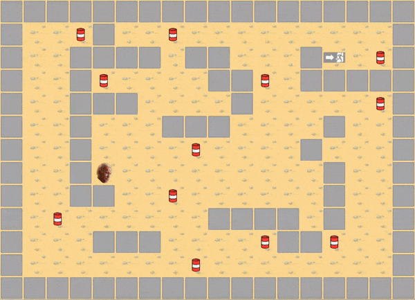

romain hoarau
so_long is the name of the first 2d minigame I ever created within my cursus at 42.Take a look! 
if your eyes are bleeding I'm truly sorry :)
you are playing as Joe Biden and your goal is to collect oil barrels (nothing political I swear).
the aim of this game was for me more about the mecanics than the graphics (as you may have seen)
for this game to work properly, you must sent the program a correct map.
the map must be a closed rectangle with at least a player, a collectible and an exit.
of course, the player cannot exit the map if all the collectibles are not collected.
if you're intrigued, you will find the source code of this project on my dedicated github page.
you can try the game if you're on macOS with the right environment!